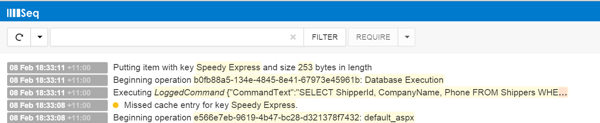

Assessing Performance & Scale with Serilog
We have performance profilers, text logs, and performance counters. Does structured logging even have a place?
The problem
I am currently working for a client that is experiencing significant performance & scale issues - particularly around the interaction between the .Net application code and the database. Their logic spawns across multiple threads, processes, and machines. Depending on the context of what you are executing in (back-end process, web request) the logic and way the application goes about doing this can vary quite differently. The codebase 'shows its age' with a large amount of technical debt.
We'd been there for a little while and were having difficulty gathering a picture of:
- Where is the low hanging fruit?
- What design issues were causing the biggest problems?
- What areas could we provide the most value without introducing too much risk to the business?
- How do we best illustrate to the stakeholders where these performance / scale issues are and the impact of not addressing them with a proper solution?
We had access to performance profilers, and they were great when examining something from a single viewpoint but as soon as you have multiple views and systems all interacting in the same ecosystem they lose a lot of value. Finding bottlenecks and potential deadlock triggers is something that cannot be done in isolation.
The solution
My colleagues from Readify came up with the idea of using Serilog which is a structured logger built using .Net. This would allow us to put logging code across all of the infrastructural areas of the codebase and be able to look at how these areas were interacting with context.
For example: You can use SQL Profiler to see SQL is executing, but you do not know, what thread it is executing on, what logic business operation it belongs to, what system made that request (is it servicing a web, or backend process request), where it fits in the flow of the application.
Serilog gives you complete control over what information is important to you and your problem domain. Things that traditionally are quite difficult to track, like how long threads are being blocked (and how often) are now possible.
Note: This blog post talks about Serilog, but for the most part any structured logging framework could be used here.
The proof of concept
For my own purposes I created a proof of concept using the default ASP.Net template with some data access through Dapper and the Northwind database. I created my own dummy cache provider. You can find the POC on GitHub here.
I created some wrappers around the base database objects (e.g. DbCommandWrapper) so that I could capture how ADO.Net was interacting with the database. I also created additional logic to say record how large an object being inserted in a distributed cache was.
Through the proof of concept I could correlate the entire flow of the application from a performance & scale perspective (for the facets I was interested in).
Enter Seq
Seq is effectively a supported datastore (or sink) that Serilog can write entry information into. It is a commercial product that you can use for free as a single user.
What Seq does really well is let you visualize the data. It has its own query syntax which really showcases the power that structured logging gives you over standard text-based logging.

Correlating business activities
Nicholas Blumhardt who is one of the people behind Serilog / Seq has an excellent blog post on this topic. My proof of concept didn't include the business context but it should be quite easy to see how to do this.
Data sensitivity
Many organizations, including the one I am currently consulting for are very sensitive about data, particularly their customer's data. One of the obvious benefits that using a structured logging approach for tracking performance & scale metrics over a profiler is that it can run in production. But this doesn't mean it has to.
For this particular client we have it on our roadmap to create a branch in source control that acts as a 'playground' to allow us to inject code and try things out. This code will never hit production and changesets will never leave this branch. But what we can do is put in all that logging around data that would be very sensitive in production in order to identify and deal with the technical challenges ahead.
Extensibility
Seq and Serilog both have extensibility points and it will be interesting to see what the community comes up with in the future. I myself for the POC used the Serilog.Extras.Timings Nuget package but there are already a number of extras available.
What next?
I love the combination of Serilog & Seq. This proof of concept has really sold me on the power that they offer. Being able to look at instrumentation data in the context of business events is huge. My one problem, though, is despite being able to filter the data you essentially only get one view of it at a time and there is still far too much noise.
Often when faced with performance & scale problems the hardest part isn't identifying the problem or coming up with a solution, but selling what needs done to the business. Propellerheads like myself can look at data and get value from it, but those making the final decisions need to do so off information that is meaningful to them.
What I'd really like to see is some sort of reporting or 'Business Intelligence' functionality start making its way into Seq. Only then in my opinion will it be able to stand up to the likes of Splunk. Serilog does have a Splunk sink, but for where I am working at the moment, Seq's definite advantage is that it is low ceremony.